주택관리사보-1차 (2015-07-18 기출문제)
1과목: 민법
1. 신의칙 등에 관한 설명으로 옳은 것은? (다툼이 있으면 판례에 따름)
- 사적자치의 원칙상 계약당사자는 신의칙의 적용을 배제할 수 있다.
- 법률행위의 해석은 당사자의 진의를 탐구하는 것이므로 신의칙이 적용될 여지가 없다.
- 이사의 지위에서 부득이 회사의 계속적 거래관계로 인한 불확정한 채무에 대하여 보증인이 된 자가 이사의 지위를 떠난 경우, 사정변경을 이유로 보증계약을 해지할 수 없다.
- 아파트 분양자는 아파트 단지 인근에 쓰레기 매립장이 건설예정인 사실을 분양계약자에게 고지할 신의칙상 의무를 부담한다.
- 법정대리인의 동의 없이 신용구매계약을 체결한 미성년자가 나중에 법정대리인의 동의 없음을 이유로 이를 취소하는 것은 신의칙에 반한다.
(정답률: 44%)

2. 미성년자에 관한 설명으로 옳지 않은 것은? (다툼이 있으면 판례에 따름)
- 미성년자는 법정대리인의 동의가 없더라도 부담 없는 증여를 받을 수 있다.
- 성년의제는 공직선거법에는 적용되지 않는다.
- 1994년 9월 10일 오후 11시에 출생한 자는 2014년 9월 9일 오후 12시에 성년이 된다.
- 자신의 노무제공에 따른 임금의 청구와 관련된 소송행위는 미성년자가 독자적으로 할 수 있다.
- 미성년자의 법률행위에 대한 법정대리인의 동의는 묵시적으로도 할 수 있다.
(정답률: 43%)
3. 성년후견제도에 관한 설명으로 옳지 않은 것은?
- 가정법원은 질병이나 노령 등의 사유로 인한 정신적 제약으로 사무를 처리할 능력이 부족한 사람에 대하여 일정한 자의 청구로 성년후견개시의 심판을 한다.
- 가정법원은 성년후견개시의 심판을 할 때 본인의 의사를 고려하여야 한다.
- 가정법원은 취소할 수 없는 피성년후견인의 법률행위의 범위를 정할 수 있다.
- 피성년후견인이 일용품의 구입 등 일상생활에 필요하고 그 대가가 과도하지 아니한 법률행위를 한 경우, 성년후견인은 이를 취소할 수 없다.
- 성년후견개시의 원인이 소멸된 경우에 지방자치단체의 장은 가정법원에 성년후견종료의 심판을 청구할 수 있다.
(정답률: 39%)
4. 부재자의 재산관리제도에 관한 설명으로 옳은 것은? (다툼이 있으면 판례에 따름)
- 생사가 불분명한 자만이 부재자로 된다.
- 법원이 선임한 재산관리인이 부재자 재산에 대한 임대료를 청구하기 위해서는 법원의 허가를 얻어야 한다.
- 재산관리인의 권한초과행위에 대한 법원의 허가는 사후적 추인의 형식으로도 가능하다.
- 부재자의 사망이 확인되면 법원이 선임한 재산관리인의 권한은 선임결정의 취소 없이 소멸한다.
- 법원이 선임한 재산관리인은 부재자와의 사이에 위임계약관계가 없으므로 직무상 선량한 관리자의 주의의무를 부담하지 않는다.
(정답률: 45%)
5. 실종선고에 관한 설명으로 옳은 것은?
- 보통실종의 실종기간은 3년이다.
- 실종선고가 확정되면 실종자는 실종기간이 만료한 때에 사망한 것으로 추정한다.
- 실종선고의 취소사유가 있는 경우, 검사와 지방자치단체의 장은 실종선고의 취소를 청구할 수 있다.
- 甲이 법원으로부터 실종선고를 받은 경우, 甲의 재산에 대한 상속은 실종선고시에 개시된다.
- 실종선고를 받은 사람이 생환 후 종래 주소지에서 타인의 부동산을 매수하는 매매계약을 체결할 수 있다.
(정답률: 24%)
6. 민법상 사단법인에 관한 설명으로 옳지 않은 것은? (다툼이 있으면 판례에 따름)
- 정관의 변경은 주무관청의 허가를 얻지 아니하면 그 효력이 없다.
- 정관의 규범적인 의미 내용과는 다른 해석이 사원총회의 결의에 의하여 표명된 경우, 그 결의에 의한 해석은 그 구성원에게 구속력이 있다.
- 사원자격의 득실에 관한 규정은 사단법인 정관의 필요적 기재사항이다.
- 법인은 그 주된 사무소의 소재지에서 설립등기를 함으로써 성립한다.
- 법인은 법률의 규정에 좇아 정관으로 정한 목적의 범위 내에서 권리와 의무의 주체가 된다.
(정답률: 45%)
7. 법인의 불법행위능력에 관한 설명으로 옳은 것은? (다툼이 있으면 판례에 따름)
- 대표권이 없는 이사도 법인의 대표기관이므로 이들의 행위에 대하여도 법인의 불법행위책임이 성립한다.
- 법인의 목적범위 외의 행위로 인하여 타인에게 손해를 가한 때에는 그 사항의 의결에 찬성하거나 그 의결을 집행한 사원, 이사 및 기타 대표자가 연대하여 배상책임을 진다.
- 법인은 사용자로서 불법행위책임을 지는 것이므로 대표기관을 선임ㆍ감독함에 있어 주의의무를 다하였음을 증명하면 그 책임을 면한다.
- 법인의 불법행위책임이 성립하면 대표기관의 불법행위책임은 성립하지 않는다.
- 피해자에게 손해발생에 대한 과실이 인정되더라도 법인의 불법행위책임으로 인한 손해배상을 산정할 때에 법원은 과실상계를 할 수 없다.
(정답률: 34%)
8. 민법상 법인의 대표기관에 관한 설명으로 옳지 않은 것은? (다툼이 있으면 판례에 따름)
- 법인은 대표기관으로 이사를 두어야 하며, 이사가 수인이면 특별한 사정이 없는 한 법인의 사무에 관하여 각자 법인을 대표한다.
- 법인의 정관에 규정된 대표권제한을 등기하지 않았더라도 이를 악의의 제3자에게 대항할 수 있다.
- 이사가 없거나 결원이 있는 경우에 이로 인하여 손해가 생길 염려 있는 때에는 법원은 이해관계인이나 검사의 청구에 의하여 임시이사를 선임하여야 한다.
- 법인과 이사의 이익이 상반하는 사항에 관하여 이사는 대표권이 없으므로, 법원은 이해관계인이나 검사의 청구에 의하여 특별대리인을 선임하여야 한다.
- 직무대행자가 가처분명령에 다른 정함이 있는 경우와 법원의 허가를 얻은 경우를 제외하고, 법인의 통상사무에 속하지 아니한 행위를 하면 법인은 선의의 제3자에 대하여 책임을 진다.
(정답률: 30%)
9. 법인 아닌 사단에 관한 설명으로 옳지 않은 것은? (다툼이 있으면 판례에 따름)
- 법인 아닌 사단 명의로 부동산을 등기할 수 있다.
- 공동주택의 입주자대표회의는 법인 아닌 사단이다.
- 법인 아닌 사단인 교회가 2개로 분열되고, 분열되기 전 교회의 재산이 분열된 각 교회의 구성원들에게 각각 총유적으로 귀속되는 형태의 교회의 분열은 허용된다.
- 소집절차에 하자가 있어 그 효력을 인정할 수 없는 종중총회의 결의라도 후에 적법하게 소집된 종중총회에서 이를 추인하면 처음부터 유효로 된다.
- 법인 아닌 사단의 재산귀속관계는 그 구성원의 총유이므로, 구성원은 사단 내부의 규약 등에 정하여진 바에 따라 총유물을 사용ㆍ수익할 수 있다.
(정답률: 25%)
10. 물건에 관한 설명으로 옳은 것은? (다툼이 있으면 판례에 따름)
- 법정과실은 물건의 사용대가로 받는 금전 기타의 물건이다.
- 분필절차 없이 토지의 특정부분에 대하여 저당권이나 전세권을 설정할 수는 없으나 지역권은 설정할 수 있다.
- 천연과실은 수취할 권리의 존속기간일수의 비율로 취득한다.
- 정당한 권원 없이 타인의 토지 위에 경작ㆍ재배한 농작물은 명인방법을 갖추지 않으면 토지소유자에 속한다.
- 주물 위에 설정된 저당권은 특별한 사정이 없는 한 저당권 설정 당시의 종물에는 미치나 그 이후의 종물에는 그렇지 않다.
(정답률: 35%)
11. 종물에 관한 설명으로 옳지 않은 것은? (다툼이 있으면 판례에 따름)
- 책상과 의자는 주택의 종물이 아니다.
- 횟집으로 사용할 점포 건물에 거의 붙여서 생선을 보관하기 위하여 신축한 수족관 건물은 점포 건물의 종물이 아니다.
- 종물은 주물로부터 독립한 물건이면 되고, 반드시 동산일 필요는 없다.
- 건물의 대지가 아닌 다른 필지의 지하에 설치되어 있는 정화조는 그 건물의 종물이 아니다.
- 종물에 관한 규정은 권리상호간에도 유추적용될 수 있다.
(정답률: 23%)
12. 법률행위의 성립요건에 해당하는 것은?
- 요물계약에서 물건의 인도
- 대리행위에서 대리권의 존재
- 당사자의 의사능력과 행위능력
- 조건부 법률행위에서 조건의 성취
- 토지거래허가구역 내의 토지거래계약에 관한 관할관청의 허가
(정답률: 34%)
13. 甲이 자신의 X토지를 乙에게 매도하기로 한 경우에 관한 설명으로 옳지 않은 것은? (다툼이 있으면 판례에 따름)
- 甲이 乙의 중도금 지급채무 불이행을 이유로 매매계약을 해제한 경우에도, 乙은 착오를 이유로 그 계약을 취소할 수 있다.
- X토지가 乙에게 매도된 사실을 알고 있는 丙이 甲으로부터 그 토지를 매수한 경우, 특별한 사정이 없는 한 甲과 丙 사이의 매매계약은 유효하다.
- 甲이 가장매매를 하여 乙명의로 X토지에 대한 소유권이전등기를 해 준 경우, 甲은 乙의 상속인 丙에게 X토지에 대한 소유권을 주장할 수 있다.
- 지번을 착각하여 계약서에 매매목적물을 X토지가 아니라 Y토지로 기재한 경우, 매매계약은 X토지에 대하여 성립한다.
- 만일 丁소유의 X토지를 상속받은 甲이 상속세를 면하려고 丁명의로 乙과 매매계약을 체결하였다면, 그 계약은 반사회질서의 법률행위로서 무효이다.
(정답률: 34%)
14. 반사회질서의 법률행위에 해당하여 무효인 것을 모두 고른 것은? (다툼이 있으면 판례에 따름)
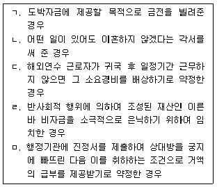
- ㄱ, ㄷ
- ㄱ, ㄴ, ㅁ
- ㄴ, ㄷ, ㄹ
- ㄷ, ㄹ, ㅁ
- ㄱ, ㄴ, ㄹ, ㅁ
(정답률: 30%)
15. 甲이 자신의 X부동산을 乙에게 증여하여 乙명의로 소유권이전등기를 해 주었고, 乙이 그 부동산을 丙에게 매도하여 소유권이전등기를 해 주었다. 이에 관한 설명으로 옳지 않은 것은?
- 甲과 乙사이의 증여계약이 통정허위표시에 해당한 경우, 그 증여계약은 무효이다.
- 甲과 乙사이의 증여계약이 통정허위표시에 해당한 경우, 甲은 악의의 丙에 대해 소유권이전등기의 말소를 청구할 수 있다.
- 甲이 비진의표시로 X부동산을 乙에게 증여한 경우, 乙이 선의ㆍ무과실이면 甲과 乙사이의 증여계약은 유효하다.
- 甲과 乙사이의 증여계약이 비진의표시로 무효인 경우, 甲은 선의의 丙에 대해 소유권이전등기의 말소를 청구할 수 없다.
- 만일 甲이 의사무능력 상태에서 乙과 증여계약을 체결하였다면, 甲과 乙사이의 증여계약은 유효하다.
(정답률: 30%)
16. 의사표시의 효력에 관한 설명으로 옳지 않은 것은?
- 상대방이 있는 의사표시는 원칙적으로 상대방에게 도달한 때에 그 효력이 생긴다.
- 의사표시자가 과실로 상대방을 알지 못하는 경우, 의사표시는 공시송달에 의하여 송달할 수 있다.
- 의사표시자가 그 통지를 발송한 후 제한능력자가 되어도 의사표시의 효력에 영향을 미치지 않는다.
- 승낙의 기간을 정하지 아니한 계약의 청약은 청약자가 상당한 기간 내에 승낙의 통지를 받지 못한 때에는 그 효력을 잃는다.
- 의사표시의 상대방이 의사표시를 받은 때에 제한능력자인 경우에는 원칙적으로 의사표시자는 그 의사표시로써 대항할 수 없다.
(정답률: 35%)
17. 민법상 대리에 관한 설명으로 옳지 않은 것은? (다툼이 있으면 판례에 따름)
- 불법행위는 대리가 허용되지 않는다.
- 법정대리의 경우에도 권한을 넘는 표현대리가 성립할 수 있다.
- 대리인이 여럿인 경우에는 원칙적으로 각자가 본인을 대리한다.
- 본인은 무권대리인의 행위를 추인할 수 있으며, 그 효력은 원칙적으로 추인한 때로부터 발생한다.
- 매매계약을 체결할 권한을 수여받은 대리인은 특별한 사정이 없는 한 그 계약을 해제할 권한이 없다.
(정답률: 28%)
18. 무권대리인 乙이 甲을 대리하여 丙과 매매계약을 체결한 경우에 관한 설명으로 옳지 않은 것은?
- 甲이 乙의 무권대리행위를 추인하면 丙은 甲에 대해 매매계약의 효력을 주장할 수 있다.
- 丙이 계약 당시에 乙에게 대리권이 없음을 알지 못한 경우, 丙은 甲의 추인이 있을 때까지 매매계약을 철회할 수 있다.
- 乙이 미성년자인 경우, 乙은 丙에 대하여 계약을 이행할 책임 또는 손해를 배상할 책임을 지지 않는다.
- 甲이 추인의 의사표시를 乙에게 한 경우, 甲은 그 사실을 모르는 丙에게 추인의 효과를 주장하지 못한다.
- 丙이 계약 당시에 乙에게 대리권이 없음을 안 경우, 丙은 상당한 기간을 정하여 甲에게 그 추인여부의 확답을 최고할 수 없다.
(정답률: 36%)
19. 甲은 자신의 X부동산을 2억원에 매도하는 계약을 乙과 체결한 후, 그 계약이 乙의 기망행위로 이루어진 것임을 알면서도 다음 사유에 대해 이의를 보류하지 않았다. 甲이 매매계약을 취소할 수 있는 경우는?
- 甲이 乙로부터 이행청구를 받은 경우
- 甲이 乙로부터 담보를 제공받은 경우
- 甲이 乙로부터 중도금 1억원을 수령한 경우
- 甲이 매매대금채권을 제3자에게 양도한 경우
- 甲이 乙에게 X부동산에 대한 소유권이전등기를 해 준 경우
(정답률: 25%)
20. 법률행위의 무효에 관한 설명으로 옳지 않은 것은? (다툼이 있으면 판례에 따름)
- 법률행위의 일부분이 무효인 때에는 원칙적으로 그 전부가 무효이다.
- 무효인 법률행위는 그 법률행위가 성립한 때부터 효력이 발생하지 않는다.
- 매매의 목적이 된 권리가 타인에게 속한 경우에는 특별한 사정이 없는 한 매매계약은 무효이다.
- 불공정한 법률행위로서 무효인 경우, 추인에 의하여 유효로 될 수 없다.
- 무효인 법률행위에 따른 법률효과를 침해하는 것처럼 보이는 위법행위가 있더라도 그 법률효과의 침해에 따른 손해배상을 청구할 수 없다.
(정답률: 24%)
21. 기한의 이익을 갖는 자를 모두 고른 것은?
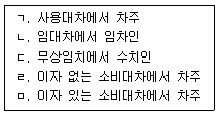
- ㄱ, ㅁ
- ㄷ, ㄹ
- ㄱ, ㄴ, ㄷ
- ㄱ, ㄴ, ㄹ, ㅁ
- ㄴ, ㄷ, ㄹ, ㅁ
(정답률: 25%)
22. 기간과 기한에 관한 설명으로 옳지 않은 것은?
- 기간을 시ㆍ분ㆍ초로 정한 때에는 즉시로부터 기산한다.
- 채무자가 담보제공의 의무를 이행하지 않은 경우, 채무자는 기한의 이익을 주장하지 못한다.
- 2015년 5월 31일 10시부터 1개월이라고 한 경우, 2015년 6월 30일 10시에 기간이 만료한다.
- 기간의 말일이 공휴일인 2015년 5월 5일(화)이면 기간은 그 다음날로 만료한다.
- 시기 있는 법률행위는 기한이 도래한 때로부터 그 효력이 생긴다.
(정답률: 50%)
23. 소멸시효의 중단에 관한 설명으로 옳지 않은 것은? (다툼이 있으면 판례에 따름)
- 주채무자에 대한 시효중단은 보증인에 대하여 그 효력이 없다.
- 시효중단의 효력 있는 승인에는 상대방의 권리에 관한 처분의 능력이나 권한 있음을 요하지 않는다.
- 파면된 직원이 제기한 파면처분 무효확인의 소는 그 파면 후의 보수금채권에 대하여 시효중단의 효력이 있다.
- 압류는 시효이익을 받은 자에 대하여 하지 아니한 때에는 이를 그에게 통지한 후가 아니면 시효중단의 효력이 없다.
- 채권자가 피고로서 응소하여 그 소송에서 적극적인 권리를 주장하고 그것이 받아들여진 경우, 시효중단사유인 재판상 청구에 해당한다.
(정답률: 30%)
24. 소멸시효의 대상이 되는 권리에 관한 설명으로 옳은 것은? (다툼이 있으면 판례에 따름)
- 유치권은 소멸시효에 걸린다.
- 소유권에 기한 물권적 청구권은 소멸시효에 걸린다.
- 공유물분할청구권은 공유관계가 존속하더라도 그 분할청구권만이 독립하여 소멸시효에 걸린다.
- 근저당권설정약정에 의한 근저당권설정등기청구권은 그 피담보채권이 될 채권과 별개로 소멸시효에 걸린다.
- 부동산을 매수한 자가 그 목적물을 인도받아 사용ㆍ수익하고 있는 경우에도 매수인의 소유권이전등기청구권은 소멸시효에 걸린다.
(정답률: 36%)
25. 甲이 사망하여 그의 X부동산을 乙이 상속받았다. 乙은 자기 명의로 소유권이전등기를 하지 않은 채, 丙에게 X부동산을 매도하고 대금을 모두 받았다. 이에 관한 설명으로 옳은 것은? (다툼이 있으면 판례에 따름)
- 甲이 여전히 X부동산의 소유자이다.
- 乙이 자신의 명의로 등기하지 않고 甲으로부터 丙에게 바로 소유권이전등기를 마친 경우, 丙은 X부동산에 대한 소유권을 취득하지 못한다.
- 乙은 상속을 원인으로 한 소유권이전등기를 하지 않더라도 甲이 사망한 때에 X부동산에 대한 소유권을 취득한다.
- 丙은 매매대금을 모두 지급하였으므로, 자신의 명의로 X부동산에 대한 소유권이전등기를 하지 않더라도 소유권을 취득한다.
- 丙이 X부동산에 대한 소유권이전등기절차의 이행을 구하는 소를 제기하여 승소판결이 확정된 경우, 丙은 소유권이전등기를 하지 않더라도 소유권을 취득한다.
(정답률: 37%)
26. 민법상 유치권에 관한 설명으로 옳지 않은 것은?
- 유치권의 발생을 배제하는 특약을 하면 유치권은 성립하지 않는다.
- 피담보채권이 변제기에 있지 않으면, 유치권은 성립하지 않는다.
- 타인의 부동산뿐만 아니라 동산도 유치권의 객체가 될 수 있다.
- 불법행위로 취득한 점유에 기해서는 유치권이 성립하지 않는다.
- 유치권자가 유치물에 관하여 필요비를 지출한 때에는 그 가액이 현존한 경우에 한하여 상환을 청구할 수 있다.
(정답률: 28%)
27. 중고노트북 판매상인 乙은 甲의 노트북을 훔쳐서, 자신의 가게에서 丙에게 50만원에 팔고 넘겨주었다. 이에 관한 설명으로 옳지 않은 것은? (다툼이 있으면 판례에 따름)
- 丙이 훔친 노트북이라는 사실을 안 경우, 丙은 선의취득하지 못한다.
- 丙의 선의취득이 성립하려면 乙과 丙사이의 매매가 유효하여야 한다.
- 甲은 乙에 대하여 부당이득반환 또는 불법행위에 기한 손해배상을 청구할 수 있다.
- 丙이 선의취득의 요건을 갖추었더라도, 甲은 도난된 날로부터 2년 내에 丙에 대하여 노트북의 반환을 청구할 수 있다.
- 도품, 유실물에 관한 특례(민법 제251조)에 따라 丙이 甲에게 노트북을 반환하는 경우, 丙은 甲에게 대가변상을 청구하지 못한다.
(정답률: 39%)
28. 지역권에 관한 설명으로 옳지 않은 것은? (다툼이 있으면 판례에 따름)
- 공유자의 1인이 지역권을 취득한 때에는 다른 공유자도 이를 취득한다.
- 지역권자에게는 승역지의 반환청구권이 인정되지 않는다.
- 요역지가 수인의 공유인 경우에 그 1인에 의한 지역권소멸시효의 중단 또는 정지는 다른 공유자를 위하여 효력이 있다.
- 승역지와 요역지는 서로 인접하여야 하며, 떨어진 토지에 대하여는 지역권을 설정할 수 없다.
- 토지공유자 1인은 그 지분에 관하여 그 토지를 위한 지역권 또는 그 토지가 부담한 지역권을 소멸하게 하지 못한다.
(정답률: 32%)
29. 부동산점유취득시효에 관한 설명으로 옳지 않은 것은? (다툼이 있으면 판례에 따름)
- 행정재산은 공용폐지가 되지 않는 한 취득시효의 대상이 되지 못한다.
- 분필되지 않은 토지의 일부도 시효취득될 수 있다.
- 미등기 부동산에 대하여 점유취득시효가 완성된 경우에도 등기를 하지 않는 한, 점유자는 소유권을 취득하지 못한다.
- 취득시효 완성자는 취득시효가 완성된 후에 시효이익을 포기할 수 있다.
- 취득시효로 인한 권리취득의 효력은 등기한 때부터 발생하며, 점유를 개시한 때로 소급하지는 않는다.
(정답률: 32%)
30. 공동소유에 관한 설명으로 옳은 것은? (다툼이 있으면 판례에 따름)
- 공유자는 다른 공유자의 동의 없이 공유물을 처분하거나 변경하지 못한다.
- 공유자 과반수의 동의가 있어야 공유물을 분할할 수 있다.
- 합유물에 관하여 경료된 원인무효의 소유권이전등기의 말소를 구하는 소송은 합유자 전원이 청구하여야 한다.
- 총유재산의 보존에 관한 소송은 구성원 각자가 단독으로 할 수 있다.
- 공유물의 관리에 관한 사항은 달리 정한 바가 없으면, 공유자 전원의 동의가 있어야 한다.
(정답률: 27%)
31. 물권에 관한 설명으로 옳지 않은 것은? (다툼이 있으면 판례에 따름)
- 물권은 법률 또는 관습법에 의하는 외에는 임의로 창설하지 못한다.
- 지상권 또는 전세권을 저당권의 목적으로 할 수 있다.
- 분묘기지권은 물권이지만, 온천에 관한 권리는 독립한 물권으로 볼 수 없다.
- 미등기 건물의 양수인은 소유권에 준하는 관습법상의 물권을 취득한다.
- 지상권자는 토지소유자의 동의 없이 지상권을 양도할 수 있다.
(정답률: 30%)
32. 저당권에 관한 설명으로 옳지 않은 것은? (다툼이 있으면 판례에 따름)
- 저당권이 성립된 후 저당권설정등기가 불법으로 말소되면 저당권은 소멸한다.
- 저당권은 그 담보한 채권과 분리하여 타인에게 양도하거나 다른 채권의 담보로 하지 못한다.
- 부동산은 물론이고 등록된 자동차, 등기된 선박도 저당권의 객체가 될 수 있다.
- 저당권설정합의가 있더라도 저당권설정등기가 되지 않으면 저당권은 성립하지 않는다.
- 토지를 목적으로 저당권을 설정한 후 설정자가 그 토지에 건물을 축조한 때, 저당권자는 토지와 함께 그 건물의 경매를 청구할 수 있다.
(정답률: 37%)
33. 금전채무불이행으로 인한 손해배상에 관한 설명으로 옳지 않은 것은? (다툼이 있으면 판례에 따름)
- 채무자는 과실 없음을 항변하지 못한다.
- 손해배상액은 특별한 사정이 없는 한 법정이율에 의한다.
- 지연손해금채무는 이행지체로 인한 손해배상채무이다.
- 채권자가 손해의 발생과 그 손해액을 증명하여야 한다.
- 이행지체에 대비한 지연손해금 비율을 따로 약정한 경우, 이는 손해배상액의 예정으로 감액의 대상이 될 수 있다.
(정답률: 22%)
34. 이행불능과 위험부담에 관한 설명으로 옳지 않은 것은? (다툼이 있으면 판례에 따름)
- 채무자의 책임 있는 사유로 이행불능이 되면 채권자는 이행의 최고 없이 전보배상을 청구할 수 있다.
- 채무자의 책임 없는 사유로 후발적 불능이 된 경우에도 채권자는 대상청구권을 행사할 수 있다.
- 매매계약을 체결한 후, 매도인이 매매목적물에 관하여 다시 제3자와 매매계약을 체결하였다는 사실만으로는 매매계약이 법률상 이행불능이라고 할 수 없다.
- 쌍무계약의 당사자 일방의 채무가 채권자의 책임 있는 사유로 이행할 수 없게 된 때에는 채무자는 상대방의 이행을 청구할 수 있다.
- 이행지체 중에 이행보조자의 과실로 이행불능으로 된 경우, 채무자는 자신의 책임 없는 사유를 증명하여 채무불이행책임을 면할 수 있다.
(정답률: 30%)
35. 계약해제에 관한 설명으로 옳지 않은 것은? (다툼이 있으면 판례에 따름)
- 해제의 의사표시는 철회하지 못하나, 상대방이 승낙하면 철회할 수 있다.
- 채무자가 계약을 이행하지 아니할 의사를 명백히 표시한 경우, 채권자는 이행기 전이라도 이행의 최고 없이 계약을 해제할 수 있다.
- 제3자를 위한 계약에서 수익자는 낙약자의 채무불이행을 이유로 계약을 해제할 수 있으나, 원상회복을 청구할 수 없다.
- 매매계약이 해제되어 원상회복을 위해 금전을 반환할 의무를 부담하는 자는 그 대금을 받은 날로부터 이자를 가산하여 반환하여야 한다.
- 당사자의 일방 또는 쌍방이 수인인 경우, 계약의 해제는 그 전원으로부터 또는 전원에게 하여야 한다.
(정답률: 32%)
36. 계약금에 관한 설명으로 옳지 않은 것은? (다툼이 있으면 판례에 따름)
- 계약금계약은 요물계약이다.
- 계약금이 위약벌의 성질을 가지는 경우, 채무불이행으로 인한 손해배상을 별도로 청구할 수 있다.
- 계약금계약은 주계약과 독립한 계약이기에 주계약이 취소되어도 효력을 잃지 않는다.
- 해약금에 의한 계약해제의 경우, 원상회복의무는 발생하지 않는다.
- 해약금에 의한 계약해제에서 이행의 착수는 반드시 계약내용에 적합한 이행의 제공의 정도에까지 이르지 않아도 된다.
(정답률: 43%)
37. 매도인의 담보책임에 관한 설명으로 옳은 것은? (다툼이 있으면 판례에 따름)
- 물건의 하자에 대한 담보책임규정은 경매에도 적용된다.
- 특정물매매의 경우에 목적물의 하자로 인하여 계약의 목적을 달성할 수 없는 때, 악의의 매수인도 계약을 해제할 수 있다.
- 채권의 매도인이 채무자의 자력을 담보한 경우, 매매계약 당시의 자력을 담보한 것으로 간주한다.
- 매매의 목적인 권리가 타인에게 속하여 매도인이 그 권리를 취득하여 매수인에게 이전할 수 없는 경우, 매수인은 선의인 경우에 한하여 계약을 해제할 수 있다.
- 매매의 목적이 된 부동산에 설정된 저당권의 실행으로 취득한 소유권을 잃게 되어 손해를 입게 된 매수인은 악의인 경우에도 매도인에게 손해배상을 청구할 수 있다.
(정답률: 15%)
38. 토지임차인의 지상물매수청구권에 관한 설명으로 옳지 않은 것은? (다툼이 있으면 판례에 따름)
- 토지임차인은 자신의 채무불이행으로 인해 계약이 해지된 경우, 지상물매수청구권을 행사할 수 있다.
- 지상물매수청구권은 재판상으로 뿐만 아니라 재판 외에서도 행사할 수 있다.
- 토지임차인이 지상물매수청구권을 행사하면 임대인의 승낙여부와 관계없이 매매계약이 성립한 경우와 같은 효력이 생긴다.
- 대항력 있는 토지임차권의 경우, 임차권 소멸 후 그 토지가 제3자에게 양도되더라도 토지임차인은 신소유자에 대하여 지상물매수청구권을 행사할 수 있다.
- 건물 소유를 목적으로 한 기간약정 없는 토지임대차계약이 임대인의 해지통고로 종료한 경우, 임차인은 계약갱신을 청구하지 않고 지상물매수청구권을 행사할 수 있다.
(정답률: 34%)
39. 도급에 관한 설명으로 옳지 않은 것은? (다툼이 있으면 판례에 따름)
- 도급인은 특별한 사정이 없는 한 그 완성된 목적물의 인도와 동시에 보수를 지급하여야 한다.
- 도급인은 일의 완성 전에는 성취된 부분에 하자가 있더라도 수급인에게 하자보수를 청구할 수 없다.
- 천재지변 등의 불가항력으로 인해 공사가 지연된 경우, 지체상금에 대한 약정이 있어도 수급인은 지체상금을 지급할 의무가 없다.
- 도급인이 파산선고를 받은 경우, 수급인은 계약을 해제할 수 있지만 도급인을 상대로 계약해제로 인한 손해배상을 청구할 수 없다.
- 수급인이 완공기한 내에 공사를 완성하지 못하고, 그 기한을 넘겨 도급계약이 해제된 경우, 그 지체상금 발생의 시기(始期)는 완공기한 다음 날부터이다.
(정답률: 28%)
40. 공작물의 점유자 및 소유자의 책임에 관한 설명으로 옳지 않은 것은? (다툼이 있으면 판례에 따름)
- 전기 그 자체는 공작물에 해당하지 않는다.
- 공작물의 점유자에게는 면책사유가 인정되지 않는다.
- 피해자에게 손해배상을 한 점유자 또는 소유자는 그 손해의 원인에 대해 책임이 있는 자에게 구상권을 행사할 수 있다.
- 공작물책임이 인정되기 위해서는 공작물의 하자와 손해 사이에 인과관계가 있어야 한다.
- 공작물에 대해 직접점유자와 간접점유자가 있는 경우, 원칙적으로 직접점유자가 1차적으로 책임을 진다.
(정답률: 18%)
2과목: 회계원리
41. 포괄손익계산서에 표시되는 계정과목은?
- 금융원가
- 이익잉여금
- 영업권
- 매출채권
- 미지급법인세
(정답률: 29%)
42. 재무제표에 관한 설명으로 옳은 것은?
- 재무상태표는 일정기간의 재무성과에 관한 정보를 제공해 준다.
- 포괄손익계산서는 일정시점에 기업의 재무상태에 관한 정보를 제공해 준다.
- 자본변동표는 일정기간 동안의 자본구성요소의 변동에 관한 정보를 제공해 준다.
- 현금흐름표는 특정시점에서의 현금의 변화를 보여주는 보고서이다.
- 재무제표는 재무상태표, 손익계산서, 시산표, 자본변동표로 구성된다.
(정답률: 25%)
43. 회계거래에 해당되지 않는 것은?
- 기숙사에 설치된 시설물 ￦1,000,000을 도난당하다.
- 원가 ￦1,300,000의 상품을 현금 ￦1,000,000에 판매하다.
- 이자 ￦500,000을 현금으로 지급하다.
- 영업소 임차계약을 체결하고, 1년분 임차료 ￦1,200,000을 현금으로 지급하다.
- 직원과 월급 ￦2,000,000에 고용계약을 체결하다.
(정답률: 39%)
44. 자산을 증가시키는 거래에 해당되지 않는 것은?
- 비품을 외상으로 구입하다.
- 차입금 상환을 면제받다.
- 주주로부터 현금을 출자받다.
- 은행으로부터 현금을 차입하다.
- 이자를 현금으로 수령하다.
(정답률: 32%)
45. 다음 자료로 계산한 당기총포괄이익은?
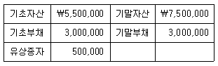
- ￦500,000
- ￦1,000,000
- ￦1,500,000
- ￦2,000,000
- ￦2,500,000
(정답률: 37%)
46. 유동자산으로 분류되지 않는 것은?
- 기업의 정상영업주기 내에 실현될 것으로 예상하는 자산
- 주로 단기매매 목적으로 보유하고 있는 자산
- 보고기간 후 12개월 이내에 실현될 것으로 예상하는 자산
- 현금이나 현금성자산으로서, 교환이나 부채 상환 목적으로의 사용에 대한 제한 기간이 보고기간 후 12개월 미만인 자산
- 정상영업주기 및 보고기간 후 12개월 이내에 소비할 의도가 없는 자산
(정답률: 30%)
47. 재무제표 요소의 인식에 관한 설명으로 옳지 않은 것은?
- 자산은 미래경제적효익이 기업에 유입될 가능성이 높고 해당 항목의 원가 또는 가치를 신뢰성 있게 측정할 수 있을 때 인식한다.
- 부채는 현재 의무의 이행에 따라 경제적효익을 갖는 자원의 유출 가능성이 높고 결제될 금액에 대해 신뢰성 있게 측정할 수 있을 때 인식한다.
- 수익은 자산의 증가나 부채의 감소와 관련하여 미래경제적효익이 증가하고 이를 신뢰성 있게 측정할 수 있을 때 인식한다.
- 비용은 자산의 감소나 부채의 증가와 관련하여 미래경제적효익이 감소하고 이를 신뢰성 있게 측정할 수 있을 때 인식한다.
- 제품보증에 따라 부채가 발생하는 경우와 같이 자산의 인식을 수반하지 않는 부채가 발생하는 경우에는 비용을 인식하지 아니한다.
(정답률: 34%)
48. 차기 회계연도로 잔액이 이월되지 않는 계정과목은?
- 집합손익
- 이익잉여금
- 선수임대료
- 주식발행초과금
- 매도가능금융자산평가이익
(정답률: 34%)
49. 재무정보의 질적 특성에 관한 설명으로 옳지 않은 것은?
- 적시성은 의사결정에 영향을 미칠 수 있도록 의사결정자가 정보를 제때에 이용가능하게 하는 것을 의미한다.
- 중요성은 정보가 누락된 경우 정보이용자의 의사결정에 영향을 줄 수 있다면 그 정보는 중요하다는 것을 의미한다.
- 비교가능성은 정보이용자가 항목 간의 유사점과 차이점을 식별하고 이해할 수 있게 하는 질적 특성이다.
- 검증가능성은 정보가 나타내고자 하는 경제적 현상을 충실히 표현하는지를 정보이용자가 확인하는 데 도움을 준다.
- 충실한 표현은 모든 면에서 정확한 것을 의미한다.
(정답률: 34%)
50. 다음은 (주)대한의 20×1년 말 재무비율분석 자료의 일부이다. 20×1년 초 재고자산은 ￦80,000이고, 20×1년 말 유동부채는 ￦120,000이다. 20×1년 매출원가가 ￦350,000일 때 재고자산회전율은? (단, 유동자산은 당좌자산과 재고자산만으로 구성되어 있다고 가정한다.)
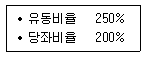
- 2회
- 3회
- 4회
- 5회
- 6회
(정답률: 22%)
51. 다음 재무분석자료에서 기업의 활동성을 분석할 수 있는 것을 모두 고른 것은?
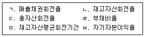
- ㄱ, ㄷ, ㅁ
- ㄱ, ㄴ, ㄷ, ㅁ
- ㄱ, ㄴ, ㄹ, ㅂ
- ㄱ, ㄷ, ㅁ, ㅂ
- ㄴ, ㄷ, ㄹ, ㅁ, ㅂ
(정답률: 27%)
52. (주)대한의 20×1년 말 창고에 보관중인 재고자산 실사액은 ￦10,000이다. 다음 자료를 반영할 경우 20×1년 말 재고자산은?
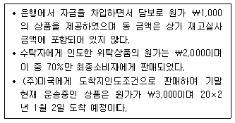
- ￦10,600
- ￦11,600
- ￦13,600
- ￦14,600
- ￦15,600
(정답률: 27%)
53. 다음은 (주)대한의 당기 재고자산 관련 자료이다. 가중평균 소매재고법에 따른 당기 매출원가는?
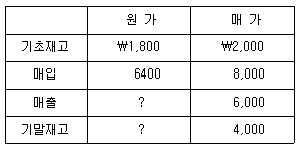
- ￦4,800
- ￦4,920
- ￦5,100
- ￦5,400
- ￦6,000
(정답률: 27%)
54. 재고자산에 관한 설명으로 옳은 것은? (단, 재고자산감모손실 및 재고자산평가손실은 없다.)
- 선입선출법 적용 시 물가가 지속적으로 상승한다면, 계속기록법에 의한 기말재고자산 금액이 실지재고조사법에 의한 기말재고자산 금액보다 작다.
- 선입선출법 적용 시 물가가 지속적으로 상승한다면, 계속기록법에 의한 기말재고자산 금액이 실지재고조사법에 의한 기말재고자산 금액보다 크다.
- 재고자산 매입 시 부담한 매입운임은 운반비로 구분하여 비용처리한다.
- 컴퓨터제조기업이 고객관리목적으로 사용하고 있는 자사가 제조한 컴퓨터는 재고자산이다.
- 부동산매매기업이 정상적인 영업과정에서 판매를 목적으로 보유하는 건물은 재고자산으로 구분한다.
(정답률: 29%)
55. 다음은 (주)대한의 재고자산 자료이다. 이동평균법을 적용할 경우 기말재고액은?
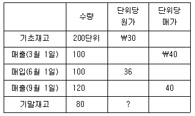
- ￦2,400
- ￦2,560
- ￦2,640
- ￦2,880
- ￦3,200
(정답률: 29%)
56. (주)대한은 20×1년 초 토지를 ￦100,000에 취득하였으며 재평가모형을 적용하여 매년 말 재평가하고 있다. 동 토지의 공정가치가 다음과 같을 때 20×2년에 당기손익으로 인식할 재평가손실은?
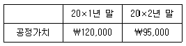
- ￦5,000
- ￦15,000
- ￦20,000
- ￦30,000
- ￦35,000
(정답률: 15%)
57. (주)대한은 기계장치A를 (주)서울의 기계장치B와 교환하였으며 이러한 교환은 상업적 실질이 있다. 교환 시점의 두 자산에 관한 자료가 다음과 같을 때, (주)대한이 인식할 기계장치B의 취득원가는? (단, 기계장치A의 공정가치가 기계장치B의 공정가치보다 더 명백하다.)
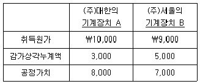
- ￦6,000
- ￦7,000
- ￦8,000
- ￦9,000
- ￦10,000
(정답률: 28%)
58. (주)대한은 20×1년 1월 1일 유형자산(취득원가 ￦10,000, 내용연수 4년, 잔존가치 ￦0)을 취득하고 이를 연수합계법으로 상각해 왔다. 그 후 20×2년 12월 31일 동 자산을 ￦4,000에 처분하였다. 동 유형자산의 감가상각비와 처분손익이 20×2년 당기순이익에 미치는 영향의 합계는?
- ￦4,000 감소
- ￦3,000 감소
- ￦2,000 감소
- ￦1,000 감소
- ￦1,000 증가
(정답률: 14%)
59. 유형자산의 취득원가에 포함되는 것은?
- 유형자산이 경영진이 의도하는 방식으로 가동될 수 있으나, 아직 실제로 사용되지는 않고 있는 경우에 발생하는 원가
- 유형자산 취득 시 정상적으로 작동되는지 여부를 시험하는 과정에서 발생하는 원가(단, 시험과정에서 생산된 재화의 순매각금액은 차감)
- 유형자산과 관련된 산출물에 대한 수요가 형성되는 과정에서 발생하는 가동손실과 같은 초기 가동손실
- 기업의 영업 전부 또는 일부를 재배치하거나 재편성하는 과정에서 발생하는 원가
- 새로운 상품과 서비스를 소개하는데 소요되는 원가
(정답률: 32%)
60. (주)대한의 당기 신기술 개발프로젝트와 관련하여 발생한 지출은 다음과 같다. 연구단계와 개발단계로 구분이 곤란한 항목은 기타로 구분하였으며, 개발단계에서 발생한 지출은 무형자산의 인식조건을 충족한다. 동 지출과 관련하여 당기에 비용으로 인식할 금액과 무형자산으로 인식할 금액은? (단, 무형자산의 상각은 고려하지 않는다.) (순서대로 비용, 무형자산)
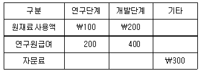
- ￦300, ￦600
- ￦400, ￦800
- ￦450, ￦750
- ￦600, ￦600
- ￦1,200, ￦0
(정답률: 32%)
61. (주)대한은 20×1년 1월 1일 다음과 같은 사채를 발행하였으며 유효이자율법에 따라 회계처리한다. 동 사채와 관련하여 옳지 않은 것은?
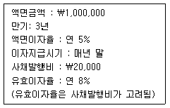
- 동 사채는 할인발행 사채이다.
- 매년 말 지급할 현금이자는 ￦50,000이다.
- 이자비용은 만기일에 가까워질수록 증가한다.
- 사채발행비가 ￦30,000이라면 동 사채에 적용되는 유효이자율은 연 8%보다 낮다.
- 사채할인발행차금 상각이 완료된 시점에서 사채 장부금액은 액면금액과 같다.
(정답률: 25%)
62. (주)대한은 20×1년 1월 1일 유형자산을 취득하고 그 대금을 다음과 같이 지급하기로 하였다. 동 거래의 액면금액과 현재가치의 차이는 중요하며, 동 거래에 적용할 유효이자율이 연 10%일 때 20×2년에 인식할 이자비용은? (단, 단수차이로 인한 오차가 있을 경우 가장 근사치를 선택한다.)
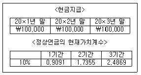
- ￦9,091
- ￦15,355
- ￦15,778
- ￦17,355
- ￦24,869
(정답률: 32%)
63. 20×1년 12월 31일 (주)대한의 자금담당직원이 잠적하였다. 20×1년 12월 31일 현재 (주)대한의 총계정원장상 당좌예금 잔액은 ￦1,480,000이고, 거래은행에서 수령한 예금잔액증명서상 당좌예금 잔액은 ￦1,700,000이다. 발견된 차이원인은 다음과 같다. 자금담당직원이 횡령한 것으로 추정되는 금액은?
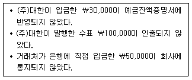
- ￦100,000
- ￦120,000
- ￦150,000
- ￦200,000
- ￦220,000
(정답률: 24%)
64. (주)대한은 매출채권의 손상차손 인식과 관련하여 대손상각비와 대손충당금 계정을 사용한다. 20×1년 초 매출채권과 대손충당금은 각각 ￦2,000,000과 ￦100,000이었다. 다음은 20×1년에 발생한 거래와 20×1년 말 손상차손 추정과 관련한 자료이다. 20×1년의 대손상각비는?
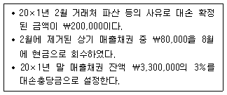
- ￦99,000
- ￦1⑤,000
- ￦119,000
- ￦199,000
- ￦204,000
(정답률: 27%)
65. (주)대한은 20×1년에 (주)한국이 발행한 사채를 ￦180,000에 취득하였다. 취득한 사채는 단기간 내 매각을 목적으로 하고 있다. 취득시 발생한 거래수수료는 ￦4,000이다. 20×1년 말에 (주)대한은 액면이자 ￦10,000을 현금 수취하였으며, 20×1년 말 사채의 공정가치는 ￦188,000이다. (주)대한의 20×1년 당기순이익에 미치는 영향은?
- ￦4,000 증가
- ￦6,000 증가
- ￦10,000 증가
- ￦14,000 증가
- ￦18,000 증가
(정답률: 16%)
66. 금융자산과 관련한 회계처리로 옳지 않은 것은?
- 지분상품은 만기보유금융자산으로 분류할 수 없다.
- 매도가능금융자산에서 발생하는 배당금 수령액은 기타포괄이익으로 계상한다.
- 매 회계연도말 지분상품은 공정가치로 측정하는 것이 원칙이다.
- 최초 인식시점에 매도가능금융자산으로 분류하였다면 이후 회계연도에는 당기손익인식금융자산으로 재분류할 수 없다.
- 최초 인식 이후 만기보유금융자산은 유효이자율법을 사용하여 상각후원가로 측정한다.
(정답률: 17%)
67. 다음은 20×1년 말 (주)대한과 관련된 자료이다. 충당부채와 우발부채 금액으로 옳은 것은? (순서대로 충당부채, 우발부채)
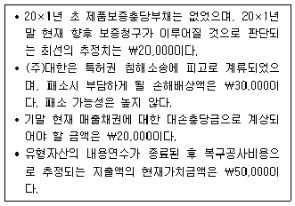
- ￦30,000, ￦30,000
- ￦50,000, ￦50,000
- ￦70,000, ￦50,000
- ￦70,000, ￦30,000
- ￦100,000, ￦0
(정답률: 11%)
68. 자본변동표에서 확인할 수 없는 항목은?
- 자기주식의 취득
- 유형자산의 재평가이익
- 매도가능금융자산평가이익
- 현금배당
- 주식분할
(정답률: 22%)
69. (주)대한의 20×1년 상품의 판매와 관련한 자료이다. 20×1년 매출액은?
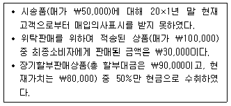
- ￦70,000
- ￦75,000
- ￦90,000
- ￦110,000
- ￦120,000
(정답률: 25%)
70. (주)대한은 20×1년 총 계약금액 ￦500,000의 용역계약을 수주하였다. 예상 총 용역원가는 ￦400,000이고, 20×1년에 실제 발생 용역원가는 ￦120,000이다. 20×1년의 용역제공과 관련된 설명으로 옳지 않은 것은?
- 용역제공거래의 결과를 신뢰성 있게 추정할 수 있다면 진행기준에 따라 수익을 인식한다.
- 발생원가 기준에 따른 용역 진행률은 30%이다.
- 발생원가를 기준으로 진행기준을 적용할 경우 이익 인식액은 ￦30,000이다.
- 용역제공거래의 성과를 신뢰성 있게 추정할 수 없는 경우 인식할 수 있는 용역수익의 최대 금액은 ￦120,000이다.
- 발생원가의 회수가능성이 높지 않은 경우 발생원가 ￦120,000은 자산으로 계상한 후 손상차손 여부를 판단한다.
(정답률: 30%)
71. (주)대한의 20×1년 1월 1일 현재 유통보통주식수는 10,000주이고, 이 중에서 4,000주를 20×1년 7월 1일 자기주식으로 취득하였다. (주)대한의 20×1년 당기순이익은 ￦9,000,000이고, 비누적적 우선주에 대한 배당결의 금액은 ￦1,000,000이다. (주)대한의 20×1년 기본주당순이익은? (단, 가중평균유통보통주식수는 월수를 기준으로 계산한다.)
- ￦800
- ￦900
- ￦1,000
- ￦1,125
- ￦1,333
(정답률: 10%)
72. 현금흐름표상 투자활동현금흐름에 해당하는 것은?
- 설비 매각과 관련한 현금유입
- 자기주식의 취득에 따른 현금유출
- 담보부사채 발행에 따른 현금유입
- 종업원급여 지급에 따른 현금유출
- 단기매매목적 유가증권의 매각에 따른 현금유입
(정답률: 34%)
73. (주)대한은 실제원가계산을 적용하고 있으며, 20×1년의 기초 및 기말 재고자산은 다음과 같다. 당기 매입한 원재료는 ￦500,000이고 당기 발생한 직접노무원가와 제조간접원가는 각각 ￦200,000 ￦380,000이다. 20×1년의 매출원가는? (단, 원재료는 모두 직접재료이다.)
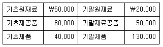
- ￦1,⑤0,000
- ￦1,110,000
- ￦1,140,000
- ￦1,180,000
- ￦1,190,000
(정답률: 23%)
74. (주)대한에는 두 개의 보조부문(수선부, 전력부)과 두 개의 제조부문(절단부, 조립부)이 있다. 각 부문간의 용역수수관계와 부문원가에 대한 자료는 다음과 같다. (주)대한은 보조부문원가를 직접배분법으로 배부하고 있다. 조립부에 배부해야 할 보조부문원가는?
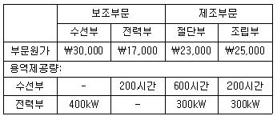
- ￦7,500
- ￦8,500
- ￦11,100
- ￦15,500
- ￦16,000
(정답률: 0%)
75. (주)대한은 형광등을 제조하여 20×1년에 개당 ￦500에 400개를 판매하였다. 형광등 1개를 제조하는데 직접재료원가 ￦150, 직접노무원가 ￦80, 변동제조간접원가 ￦70이 소요되며, 연간 고정제조간접원가는 ￦30,000이 발생하였다. 제품 판매과정에서 단위당 변동판매관리비는 ￦50, 연간 고정판매관리비는 ￦15,000이 발생하였다. 20×1년의 손익분기점 판매량은?
- 225개
- 300개
- 360개
- 450개
- 600개
(정답률: 20%)
76. (주)대한의 20×1년 생산 및 원가자료는 다음과 같다. 원재료는 공정의 착수시점에 전부 투입되며 가공원가(전환원가)는 공정전반에 걸쳐 균등하게 발생한다. 선입선출법하의 종합원가계산을 적용할 경우 완성품의 원가는? (단, 공손 및 감손은 없다.)
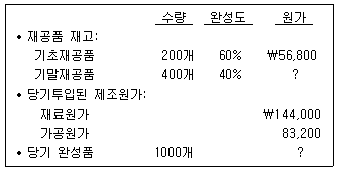
- ￦160,000
- ￦166,400
- ￦216,800
- ￦223,200
- ￦264,800
(정답률: 13%)
77. (주)대한은 20×1년 초 영업을 개시하여 제품A 5,000단위를 생산하고, 4,000단위를 단위당 ￦1,000에 판매하였다. 이와 관련된 자료는 다음과 같다. 20×1년의 변동원가계산에 의한 영업이익은?
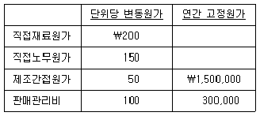
- ￦100,000
- ￦200,000
- ￦300,000
- ￦400,000
- ￦500,000
(정답률: 20%)
78. 표준원가계산의 고정제조간접원가 차이분석에 관한 설명으로 옳지 않은 것은?
- 예산(소비)차이는 실제 발생한 고정제조간접원가와 기초에 설정한 고정제조간접원가 예산의 차이를 말한다.
- 고정제조간접원가는 조업도의 변화에 따라 능률적으로 통제할 수 있는 원가가 아니므로 능률차이를 계산하는 것은 무의미하다.
- 조업도차이는 기준조업도와 실제생산량이 달라서 발생하는 것으로, 기준조업도 미만으로 실제조업을 한 경우에는 불리한 조업도차이가 발생한다.
- 조업도차이는 고정제조간접원가 자체의 통제가 잘못되어 발생한 것으로 원가통제 목적상 중요한 의미를 갖는다.
- 원가차이 중에서 불리한 차이는 표준원가보다 실제원가가 크다는 의미이므로 차이계정의 차변에 기입된다.
(정답률: 13%)
79. (주)대한은 20×1년에 생수 200병을 판매할 것으로 예상하고, 다음과 같은 예산손익계산서를 작성하였다. 회사의 연간 최대생산능력은 250병이다. (주)대한은 백화점으로부터 생수 100병을 병당 ￦180에 구입하겠다는 특별주문을 받았다. 이 주문을 수락하면 병당 ￦10의 포장비용이 추가로 발생하며, 생산능력의 제약으로 기존 시장의 예산판매량 중 50병을 감소시켜야 한다. 이 특별주문을 수락하는 경우 이익에 미치는 영향은?
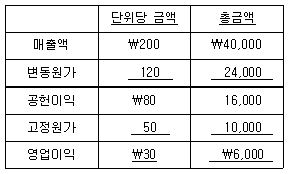
- ￦1,000 증가
- ￦1,000 감소
- ￦2,000 증가
- ￦2,000 감소
- ￦5,000 감소
(정답률: 5%)
80. (주)대한의 20×1년 월별 예상판매량은 다음과 같다. 20×1년 초 제품재고는 1,800개이며, 제품의 월말 적정재고량은 다음달 예상판매량의 20%로 유지할 계획이다. 1월에 생산해야 할 제품의 수량은?
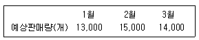
- 11,200개
- 11,800개
- 14,200개
- 14,800개
- 16,000개
(정답률: 6%)
3과목: 공동주택시설개론
81. 지정 및 기초공사에 관한 내용으로 옳은 것은?
- 기성콘크리트 말뚝 중 운반이나 말뚝박기에 의해 손상된 말뚝은 보수해서 사용한다.
- 현장타설 콘크리트 말뚝 주근의 이음은 필히 맞댐이음으로 한다.
- 강재말뚝의 현장이음은 용접으로 한다.
- 잡석지정은 잡석을 한 켜로 세워서 큰 틈이 없게 깔고, 잡석 틈새는 채울 필요가 없다.
- 밑창 콘크리트의 품질은 설계도서에서 별도로 정한 바가 없는 경우에는 10MPa로 한다.
(정답률: 45%)
82. 철근공사에 관한 설명으로 옳은 것은?
- 벽 철근공사에 사용되는 간격재는 사전에 담당원의 승인을 받은 경우 플라스틱 제품을 측면에 사용할 수 있다.
- 상온에서 철근의 가공은 일반적으로 열간 가공을 원칙으로 한다.
- 보에 사용되는 스터럽의 가공치수 허용오차는 ±8mm로 한다.
- 철근을 용접이음 하는 경우 용접부의 강도는 철근 설계기준 항복강도의 100%성능을 발휘할 수 있어야 한다.
- 용접철망 이음은 일직선상에서 모두 이어지게 한다.
(정답률: 32%)
83. 블록공사에 관한 설명으로 옳지 않은 것은?
- 속빈 콘크리트 블록의 기본블록 치수는 길이 390mm, 높이 190mm이다.
- 블록 보강용 철망은 #8～#10철선을 가스압접 또는 용접한 것을 사용한다.
- 하루 쌓기 높이는 1.5m이내를 표준으로 한다.
- 그라우트를 사춤하는 높이는 5켜로 한다.
- 인방블록은 도면 또는 공사시방서에서 정한 바가 없을 때에는 창문틀 좌우 옆 턱에 400mm정도 물리도록 한다.
(정답률: 32%)
84. 미장공사에서 단열 모르타르 바름에 관한 설명으로 옳지 않은 것은?
- 보강재로 사용되는 유리섬유는 내알칼리 처리된 제품이어야 한다.
- 초벌바름은 10mm이하의 두께로, 기포가 생기지 않도록 바른다.
- 보양기간은 별도의 지정이 없는 경우는 7일 이상 자연건조 되도록 한다.
- 재료의 저장은 바닥에서 150mm이상 띄워서 수분에 젖지 않도록 보관한다.
- 지붕에 바탕단열층으로 초벌바름할 경우에는 신축줄눈을 설치하지 않는다.
(정답률: 32%)
85. 시멘트액체방수에 관한 설명으로 옳지 않은 것은?
- 치켜올림 부위에는 미리 방수시멘트 페이스트를 바르고, 그 위를 100mm이상의 겹침폭을 두고 평면부와 치켜올림부를 바른다.
- 한랭 시공 시 방수층의 동해를 방지할 목적으로 방동제를 사용한다.
- 공기단축을 위한 경화를 촉진시킬 목적으로 지수제를 사용한다.
- 방수층을 시공한 후 부착강도를 측정한다.
- 바탕의 균열부 충전을 목적으로 KS F 4910에 따른 실링재를 사용한다.
(정답률: 48%)
86. 건축물에 작용하는 하중에 관한 설명으로 옳지 않은 것은?
- 적설하중은 구조물이 위치한 지역의 기상조건 등에 많은 영향을 받는다.
- 활하중은 분포 특성을 파악하기 어렵고, 건축물의 사용 용도에 따라 변동 폭이 크다.
- 지진하중은 건물 지붕의 형상 및 경사 등에 영향을 크게 받는다.
- 풍하중은 구조골조용, 지붕골조용, 외장 마감재용으로 분류된다.
- 고정하중은 자중, 고정된 기계설비 등의 하중으로, 고정칸막이 벽과 같은 비구조 부재의 하중도 포함한다.
(정답률: 39%)
87. 콘크리트 공사에 관한 설명으로 옳지 않은 것은?
- 콘크리트에 포함된 염화물량은 염소이온량으로서 철근 방청상 유효한 대책을 강구하지 않을 경우 0.30kg/m3이하로 한다.
- 시멘트 저장 시 시멘트를 쌓아 올리는 높이는 13포대 이하로 한다.
- 외기기온이 25℃이상의 경우, 레디믹스트 콘크리트는 비빔 시작부터 타설 종료까지의 시간을 90분으로 한다.
- 콘크리트 타설 이음부 위치는 보의 경우 구조내력을 고려해 스팬의 단부로 한다.
- 타설 이음부의 콘크리트는 살수 등에 의해 습윤시킨다.
(정답률: 40%)
88. 콘크리트의 품질관리 및 검사방법에 관한 설명으로 옳지 않은 것은?
- 굳지 않은 콘크리트의 품질검사 방법으로는 슬럼프 검사, 공기량검사가 있다.
- 구조체 콘크리트의 압축강도 검사 시험횟수는 콘크리트의 타설공구마다, 타설일마다, 타설량 150m3마다 1회로 한다.
- 현장 양생되는 공시체는 시험실에서 양생되는 공시체와 똑같은 시간에 동일한 시료를 사용하여 만들어야 한다.
- 구조물 성능을 재하시험에 의해 확인할 경우, 재하방법, 하중 크기 등은 구조물에 위험한 영향을 주지 않아야 한다.
- 코어 공시체 압축강도 시험 결과의 3개 이상 평균값이 설계기준강도의 85%에 도달하고, 그 중 하나의 값이 설계기준강도의 75%보다 작지 않으면 합격으로 한다.
(정답률: 30%)
89. 철골구조의 용접에 관한 설명으로 옳은 것을 <보기> 에서 모두 고른 것은?
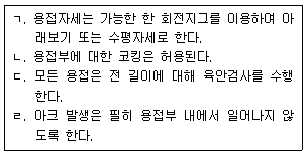
- ㄱ, ㄴ
- ㄱ, ㄷ
- ㄴ, ㄷ
- ㄴ, ㄹ
- ㄷ, ㄹ
(정답률: 34%)
90. 철근콘크리트 구조물의 사용성 및 내구성에 관한 설명으로 옳지 않은 것은?
- 구조물 또는 부재가 사용기간중 충분한 기능과 성능을 유지하기 위하여 사용하중을 받을 때 사용성과 내구성을 검토하여야 한다.
- 사용성 검토는 균열, 처짐, 피로영향 등을 고려하여야 한다.
- 보 및 슬래브의 피로는 압축에 대하여 검토하여야 한다.
- 온도변화, 건조수축 등에 의한 균열을 제어하기 위해 추가적인 보강철근을 배치하여야 한다.
- 보강설계를 할 때에는 보강 후의 구조내하력 증가 외에 사용성과 내구성 등의 성능 향상을 고려하여야 한다.
(정답률: 41%)
91. 다음에서 설명하는 공법은?
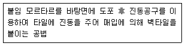
- MCR 공법
- 개량압착 붙임 공법
- 밀착 붙임 공법
- 마스크 붙임 공법
- 모자이크 타일 붙임 공법
(정답률: 36%)
92. 유리공사에 관한 설명으로 옳지 않은 것은?
- 그레이징 가스켓은 염화비닐 등으로 압출성형에 의해 제조된 유리끼움용 부자재이다.
- 로이유리는 열응력에 의한 파손 방지를 위하여 배강도 유리로 사용된다.
- 유리블록은 도면에 따라 줄눈나누기를 하고, 방수재가 혼합된 시멘트 모르타르로 쌓는다.
- 세팅블록은 새시 하단부의 유리끼움용 부자재로서 유리의 자중을 지지하는 고임재이다.
- 열선반사유리는 판유리의 한쪽 면에 열선반사막을 코팅하여 일사열의 차폐성능을 높인 유리이다.
(정답률: 40%)
93. 방수층의 종류에 속하지 않는 것은?
- 아스팔트 방수층
- 개량 아스팔트 시트 방수층
- 합성 고분자 시트 방수층
- 도막 방수층
- 오일 스테인 방수층
(정답률: 39%)
94. 철근콘크리트 구조에 관한 설명으로 옳은 것은?
- 주철근 표준갈고리의 각도는 180°와 90°로 분류된다.
- 흙에 접하지 않는 철근콘크리트 보의 최소피복두께는 20mm이다.
- 사각형 띠철근으로 둘러싸인 기둥 주철근의 최소개수는 3개이다.
- 콘크리트 압축강도용 원주공시체 Φ100×200mm를 사용할 경우 강도보정계수 0.82를 사용한다.
- 콘크리트 보강용 철근은 원형철근 사용을 원칙으로 한다.
(정답률: 32%)
95. 철골구조의 도장 및 도금에 관한 설명으로 옳지 않은 것은?
- 도료의 배합비율은 용적비로 표시한다.
- 철재 바탕일 경우, 도장 도료 견본 크기는 300×300mm로 한다.
- 가연성 도료는 전용 창고에 보관하는 것을 원칙으로 한다.
- 운전부품 및 라벨에는 도장하지 않는다.
- 볼트는 형상에 요철이 많고 부식이 쉬우므로 도장하기전에 방식대책을 수립하여야 한다.
(정답률: 45%)
96. 벽돌공사에 관한 설명으로 옳지 않은 것은?
- 한중시공 시 쌓을 때의 조적체는 건조 상태이어야 한다.
- 세로줄눈의 모르타르는 벽돌 마구리면에 충분히 발라 쌓도록 한다.
- 기초쌓기에서 기초벽돌 맨 밑의 너비는 벽두께의 1.5배로 한다.
- 보강 벽돌쌓기에서 종근은 기초까지 정착되도록 콘크리트 타설 전에 배근한다.
- 보강 벽돌쌓기에서 1일 쌓기 높이는 1.5m이하로 한다.
(정답률: 34%)
97. 도장공사에 관한 설명으로 옳지 않은 것은?
- 목재면 바탕만들기에서 목재의 연마는 바탕연마와 도막마무리연마 2단계로 행한다.
- 철재면 바탕만들기는 일반적으로 가공 장소에서 바탕재 조립 후에 한다.
- 아연도금면 바탕만들기에서 인산염 피막처리를 하면 밀착이 우수하다.
- 플라스터 면은 도장하기 전 충분히 건조시켜야 한다.
- 5℃이하의 온도에서 수성도료 도장 공사는 피한다.
(정답률: 38%)
98. 창호의 종류 중 개폐방식에 따른 분류에 해당하는 것은?
- 자재문
- 비늘살문
- 플러쉬문
- 양판문
- 도듬문
(정답률: 42%)
99. 건축 표준품셈의 설명으로 옳지 않은 것은?
- 이형 철근의 할증률은 3%이다.
- 비닐 타일의 할증률은 5%이다.
- 상시 일반적으로 사용하는 일반공구 및 시험용 계측기구류의 공구손료는 인력품의 3%까지 계상한다.
- 20층 이하 건물 품의 할증률은 7%이다.
- 소음, 진동 등의 사유로 작업 능력저하가 현저할 때 품의 할증 시 50%까지 가산할 수 있다.
(정답률: 32%)
100. 길이 15m, 높이 3m의 내벽을 바름두께 20mm 모르타르 미장을 할 때, 재료할증이 포함된 시멘트와 모래의 양은 약 얼마인가? (단, 모르타르 1m3당 재료의 양은 아래 표를 참조하며, 재료의 할증이 포함되어 있음)
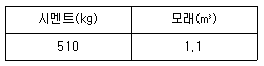
- 시멘트 359kg, 모래 0.79m3
- 시멘트 359kg, 모래 0.89m3
- 시멘트 359kg, 모래 0.99m3
- 시멘트 459kg, 모래 0.89m3
- 시멘트 459kg, 모래 0.99m3
(정답률: 34%)
101. 급수배관 내부의 압력손실에 관한 설명으로 옳지 않은 것은?
- 유체의 점성이 커질수록 증가한다.
- 직관보다 곡관의 경우가 증가한다.
- 배관의 관지름이 작아질수록 증가한다.
- 배관 길이가 길어질수록 증가한다.
- 배관내 유속이 느릴수록 증가한다.
(정답률: 43%)
102. 스테인리스 강관 접합방법으로 옳지 않은 것은?
- 프레스식 접합
- 압축식 접합
- 클립식 접합
- 신축 가동식 접합
- T.S식 접합
(정답률: 27%)
103. 습공기에 관한 설명으로 옳지 않은 것은?
- 현열비는 전열량에 대한 현열량의 비율이다.
- 습공기의 엔탈피는 습공기의 현열량이다.
- 건구온도가 일정한 경우, 상대습도가 높을수록 노점온도는 높아진다.
- 절대습도가 커질수록 수증기분압은 커진다.
- 습공기의 비용적은 건구온도가 높을수록 커진다.
(정답률: 37%)
104. 배수설비에서 청소구의 설치에 관한 사항으로 옳지 않은 것은?
- 배수 수평지관의 기점에 설치한다.
- 배수 수평주관의 기점에 설치한다.
- 배수 수직관의 최하부에 설치한다.
- 배수관이 45도를 넘는 각도로 방향을 변경한 개소에 설치한다.
- 배수 수평관이 긴 경우, 배수관의 관지름이 100mm이하인 경우는 30m마다 1개씩 설치한다.
(정답률: 30%)
1⑤. 바닥복사난방에 관한 설명으로 옳지 않은 것은?
- 증기난방과 비교하여 열용량이 작아 방열량 조절이 쉽다.
- 매설배관이 고장나면 수리가 어렵다.
- 증기난방과 비교하여 쾌적감이 높다.
- 실내에 방열기를 설치하지 않으므로 바닥면의 이용도가 높다.
- 증기난방과 비교하여 실내층고가 높은 경우에 상하온도차가 작다.
(정답률: 34%)
106. 냉동기의 압축기를 압축방법에 따라 분류할 때, 케이싱 안에 설치된 회전 날개의 고속회전운동을 이용하는 압축기는?
- 왕복식 압축기
- 흡수식 압축기
- 터보 압축기
- 스크류 압축기
- 피스톤식 압축기
(정답률: 32%)
107. 2개 이상인 트랩을 보호하기 위하여 설치하는 통기관으로, 최상류 기구배수관이 배수 수평지관에 접속하는 위치의 직하(直下)에서 입상하여 통기수직관에 접속하는 통기관은?
- 루프 통기관
- 신정 통기관
- 결합 통기관
- 습윤 통기관
- 각개 통기관
(정답률: 27%)
108. 세정밸브식 대변기에 관한 설명으로 옳지 않은 것은?
- 소음이 적어서 일반주택에서 많이 사용한다.
- 급수관의 관지름은 25mm이상으로 한다.
- 연속사용이 가능한 화장실에 많이 사용된다.
- 급수관이 부압이 되면 오수가 급수관 내로 역류할 위험이 있어 진공방지기를 설치한다.
- 학교, 사무실 등에 적합하다.
(정답률: 30%)
109. 오수처리방법 중 물리적 처리 방법이 아닌 것은?
- 스크린
- 침사
- 침전
- 여과
- 중화
(정답률: 40%)
110. 열관류저항이 2.5m2ㆍK/W인 벽체를 열전도율 0.03W/mㆍK인 단열재로 보강하여 열관류율 0.25W/m2ㆍK인 벽체로 만들고자 할 때, 단열재의 보강 두께(mm)는 얼마인가?
- 25
- 30
- 35
- 40
- 45
(정답률: 6%)
111. 전기설비에서 아래식이 나타내는 것은?
- 부하율
- 수용률
- 부등률
- 허용압력강하율
- 역률
(정답률: 32%)
112. 고가탱크방식에서 수도꼭지로 가는 급수관의 관지름을 결정하기 위해 이용하는 마찰저항선도법과 관계가 없는 것은?
- 국부저항
- 권장유속
- 동시사용유량
- 시수본관의 최저압력
- 기구급수 부하단위
(정답률: 34%)
113. 위생도기에 관한 특징으로 옳지 않은 것은?
- 팽창계수가 작다.
- 오수나 악취 등이 흡수되지 않는다.
- 탄력성이 없고 충격에 약하여 파손되기 쉽다.
- 산이나 알칼리에 쉽게 침식된다.
- 복잡한 형태의 기구로도 제작이 가능하다.
(정답률: 34%)
114. 화재안전기준상 소화기구에 관한 설명으로 옳지 않은 것은?
- 소형소화기란 능력단위가 1단위 이상이고 대형소화기의 능력단위 미만인 소화기를 말한다.
- 대형소화기란 A급 10단위 이상, B급 20단위 이상인 소화기를 말한다.
- 가스식자동소화장치란 열, 연기 또는 불꽃 등을 감지해 분말의 소화약제를 방사하여 소화하는 소화장치를 말한다.
- 자동소화장치를 제외한 소화기구는 거주자 등이 손쉽게 사용할 수 있는 장소에 바닥으로부터 높이 1.5m 이하의 곳에 비치한다.
- 아파트의 각 세대별 주방의 가스차단장치는 주방배관의 개폐밸브로부터 2m이하의 위치에 설치한다.
(정답률: 40%)
115. 소방시설 중 경보설비에 해당되지 않는 것은?
- 자동화재탐지설비
- 자동화재속보설비
- 누전경보기
- 비상콘센트설비
- 비상방송설비
(정답률: 43%)
116. LNG의 특성에 관한 설명으로 옳지 않은 것은?
- 프로판과 부탄을 주성분으로 구성되어 있다.
- 공기보다 가벼워 LPG 보다 상대적으로 안전하다.
- 무공해, 무독성이다.
- 대규모의 저장시설을 필요로 하며, 공급은 배관을 통하여 이루어진다.
- 천연가스를 -162℃까지 냉각하여 액화시킨 것이다.
(정답률: 39%)
117. 엘리베이터의 카(케이지)가 과속했을 때 작동하는 기계적 안전장치는?
- 과부하 계전기
- 전자 브레이크
- 슬로다운 스위치
- 조속기
- 주접촉기
(정답률: 30%)
118. 설비시스템과 관련한 방음 또는 방진 대책에 관한 설명으로 옳지 않은 것은?
- 기계와 기초 사이에는 방진재를 설치하고 바닥 또는 실 전체를 뜬바닥 구조로 한다.
- 실내 공기전달음은 흡음처리 한다.
- 송풍계통에는 플레넘(plenum)이나 소음기(silencer)를 설치한다.
- 벽체를 관통하는 배관은 구조체에 직접 고정하여 일체화되도록 시공한다.
- 급배수설비에는 당해층(층상) 배관방식을 도입한다.
(정답률: 27%)
119. 전기설비용 명칭과 도시기호의 연결이 옳지 않은 것은?
- 천장은폐배선:
- 노출배선:
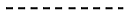
- 적산전력계:
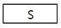
- 접지:
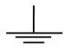
- 발전기:
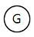
(정답률: 45%)
120. 난방설비에 관한 설명으로 옳지 않은 것은?
- 방열기는 열손실이 많은 창문 내측하부에 위치시킨다.
- 증기난방은 증발잠열을 이용하기 때문에 열의 운반능력이 작다.
- 방열기 내에 공기가 있으면 열전달과 유동을 방해한다.
- 증기난방 방식은 온수난방에 비교하여 설비비가 낮다.
- 증기난방 방열기에는 벨로즈트랩 또는 다이아프램트랩을 사용한다.
(정답률: 38%)